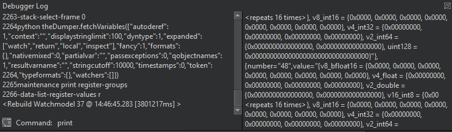

Debugger Log
You can view debug output in the Debugger Log view to troubleshoot the debugger.

If debug output is sent to the system log, select Preferences > Debugger > General > Force logging to console check box.
Right-click the view to select the following actions:
- Copy, paste, cut, and delete log contents.
- Undo and redo editing actions.
- Select all log contents.
- Clear log contents.
- Save log contents as a file.
- Log time stamps.
- Reload debugging helpers after adding custom debugging helpers.
- Set debugger preferences.
Directly Interacting with Native Debuggers
You can use the left pane of the Debugger Log view to directly interact with the command line of the native debugger.
Press Ctrl+Enter to send the contents of the line under the text cursor to the native debugger. Or, enter the command in the Command field. The right side pane of the Debugger Log view shows the command output.
Note: Usually, you do not need this feature because Qt Creator offers better ways to handle the task. For example, instead of using the GDB print command from the command line, you can evaluate an expression in the Expressions view.